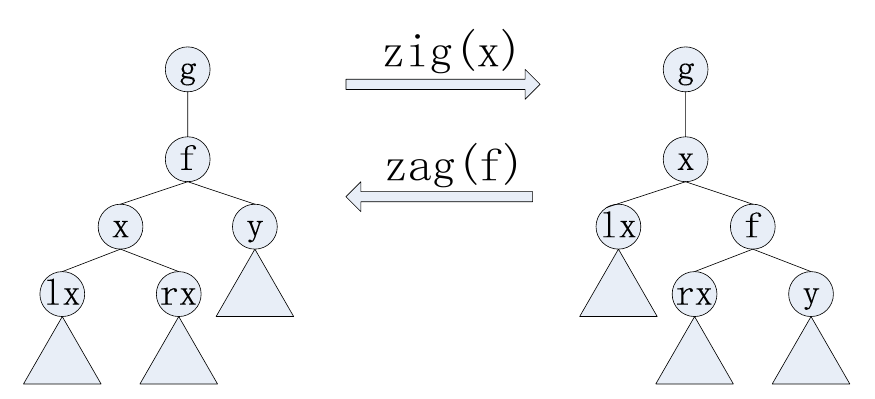
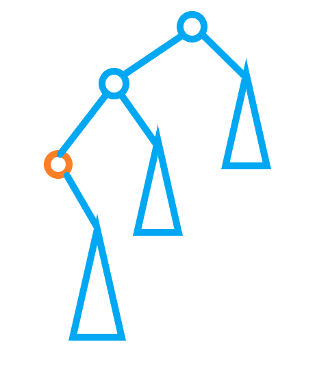
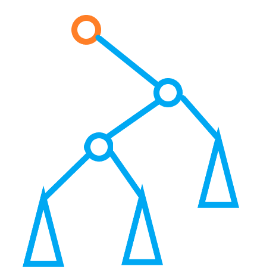

「AHOI / HNOI2017」单旋
题目：
H 国是一个热爱写代码的国家，那里的人们很小去学校学习写各种各样的数据结构。伸展树（splay）是一种数据结构，因为代码好写，功能多，效率高，掌握这种数据结构成为了 H 国的必修技能。有一天，邪恶的「卡」带着他的邪恶的「常数」来企图毁灭 H 国。「卡」给 H 国的人洗脑说，splay 如果写成单旋的，将会更快。「卡」称「单旋 splay」为「spaly」。虽说他说的很没道理，但还是有 H 国的人相信了，小 H 就是其中之一，spaly 马上成为他的信仰。 而 H 国的国王，自然不允许这样的风气蔓延，国王构造了一组数据，数据由 $m$ 个操作构成，他知道这样的数据肯定打垮 spaly，但是国王还有很多很多其他的事情要做，所以统计每个操作所需要的实际代价的任务就交给你啦。
数据中的操作分为五种：
- 插入操作：向当前非空 spaly 中插入一个关键码为 $\mathrm{key}$ 的新孤立节点。插入方法为，先让 $\mathrm{key}$ 和根比较，如果 $\mathrm{key}$ 比根小，则往左子树走，否则往右子树走，如此反复，直到某个时刻，$\mathrm{key}$ 比当前子树根 $x$ 小，而 $x$ 的左子树为空，那就让 $\mathrm{key}$ 成为 $x$ 的左孩子；
或者 $\mathrm{key}$ 比当前子树根 $x$ 大，而 $x$ 的右子树为空，那就让 $\mathrm{key}$ 成为 $x$ 的右孩子。该操作的代价为：插入后，$\mathrm{key}$ 的深度。特别地，若树为空，则直接让新节点成为一个单个节点的树。（各节点关键码互不相等。对于「深度」的解释见末尾对 spaly 的描述）。 - 单旋最小值：将 spaly 中关键码最小的元素 $\mathrm{xmin}$ 单旋到根。操作代价为：单旋前 $\mathrm{xmin}$ 的深度。（对于单旋操作的解释见末尾对 spaly 的描述）。
- 单旋最大值：将 spaly 中关键码最大的元素 $\mathrm{xmax}$ 单旋到根。操作代价为：单旋前 $\mathrm{xmax}$ 的深度。
- 单旋删除最小值：先执行 2 号操作,然后把根删除。由于 2 号操作之后,根没有左子树,所以直接切断根和右子树的联系即可（具体见样例解释）。 操作代价同 2 号操
作。 - 单旋删除最大值：先执行 3 号操作,然后把根删除。 操作代价同 3 号操作。

对于不是 H 国的人，你可能需要了解一些 spaly 的知识，才能完成国王的任务：
- spaly 是一棵二叉树，满足对于任意一个节点 $x$，它如果有左孩子 $\mathrm{lx}$，那么 $\mathrm{lx}$ 的关键码小于 $x$ 的关键码。如果有右孩子 $\mathrm{rx}$，那么 $\mathrm{rx}$ 的关键码大于 $x$ 的关键码。
- 一个节点在 spaly 的深度定义为：从根节点到该节点的路径上一共有多少个节点（包括自己）。
- 单旋操作是对于一棵树上的节点 $x$ 来说的。一开始,设 $f$ 为 $x$ 在树上的父亲。如果 $x$ 为 $f$ 的左孩子，那么执行 $\mathrm{zig}(x)$ 操作（如上图中，左边的树经过 $\mathrm{zig}(x)$ 变为了右边的树），否则执行 $\mathrm{zag}(x)$ 操作（在上图中，将右边的树经过 $\mathrm{zag}(f)$ 就变成了左边的树）。每当执
行一次 $\mathrm{zig}(x)$ 或者 $\mathrm{zag}(x)$，$x$ 的深度减小 $1$，如此反复，直到 $x$ 为根。总之，单旋 $x$ 就是通过反复执行 $\mathrm{zig}$ 和 $\mathrm{zag}$ 将 $x$ 变为根。
思路：
手玩一些数据会发现，$\text{spaly}$ 的操作还是比较有规律的，比如现在有这样一棵树：

如果对将橘色的点 $o$ 旋转到根，树就变成了这个样子：

可以发现就是把 $o$ 的儿子接到 $o$ 的父亲上，然后把原来的根接在 $o$ 下面即可。
因此父子关系就很好维护了，只要处理好深度即可。可以发现如果是 $2,3$ 操作，那么 $o$ 以外的点深度都加一。 $4,5$ 操作就是把子树内的所有点深度都减一。根据二叉排序树的性质，每次修改深度的点都在一个值域区间内，所以只要用一个线段树按照权值维护深度即可。
再考虑如何插入一个值为 $x$ 的点。树为空、恰好为最大/小值的的情况都比较简单。而对于剩下的情况，只要找到 $x$ 的前驱和后继，这两点中深度更大的那个点 $x$ 该在的那一侧肯定是空的（不然它就应该是前驱或后继），然后直接接上就行了。
插入时找前驱和后继通过 std::set 实现，整个算法的复杂度就是 $O(n\log n)$ 了。
代码实现也不算复杂，毕竟很多地方都是重复的。
代码：
1 |
|